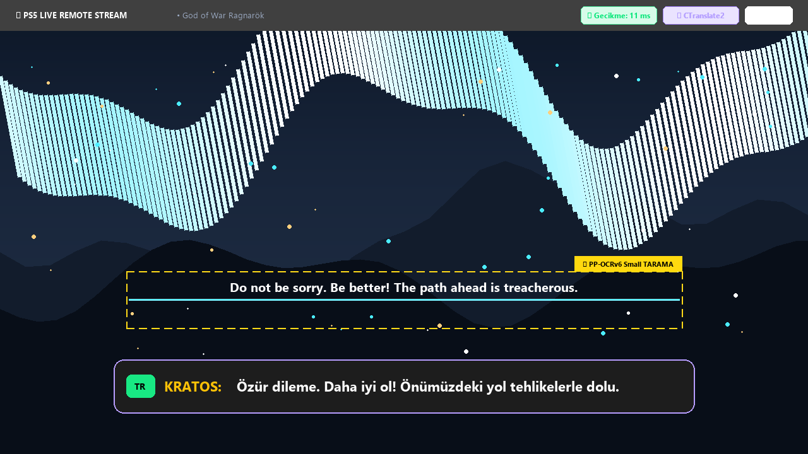
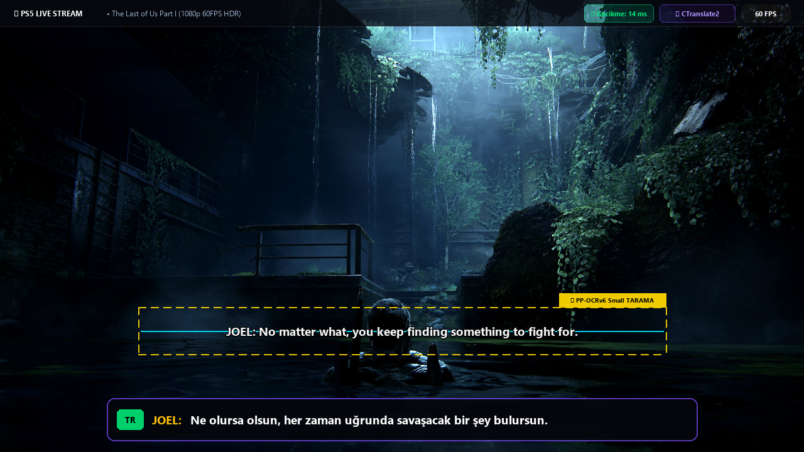
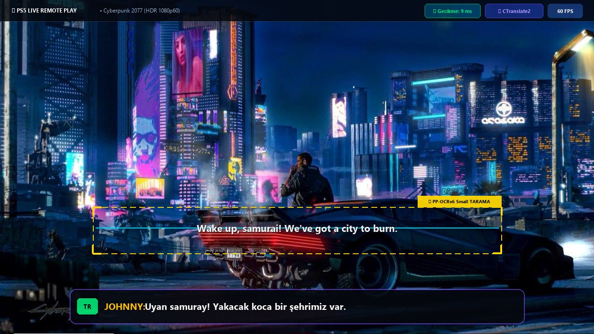
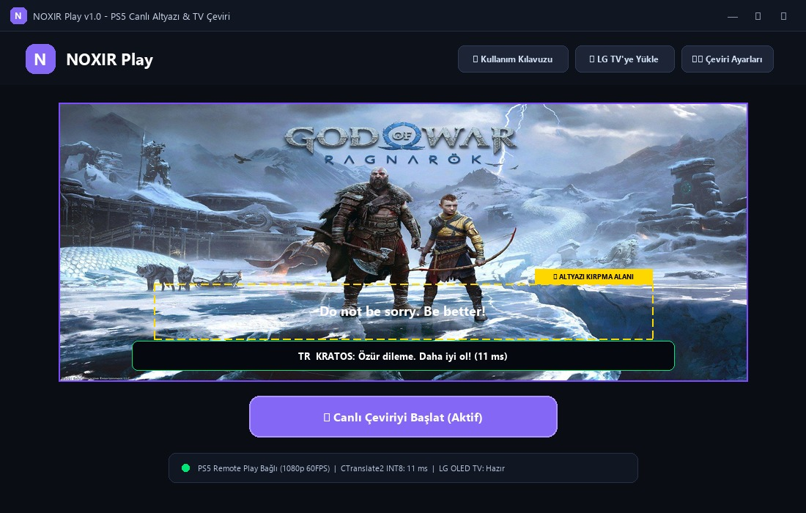
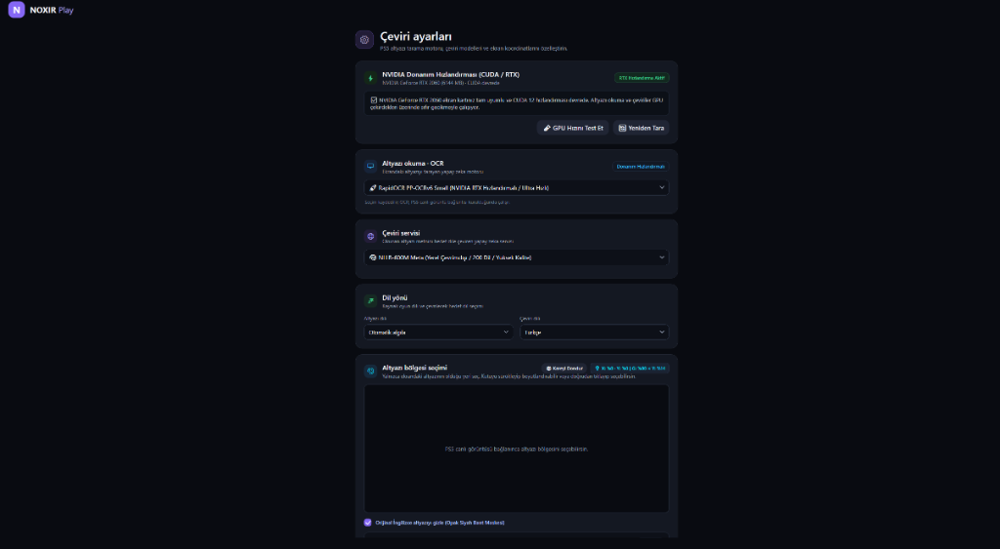
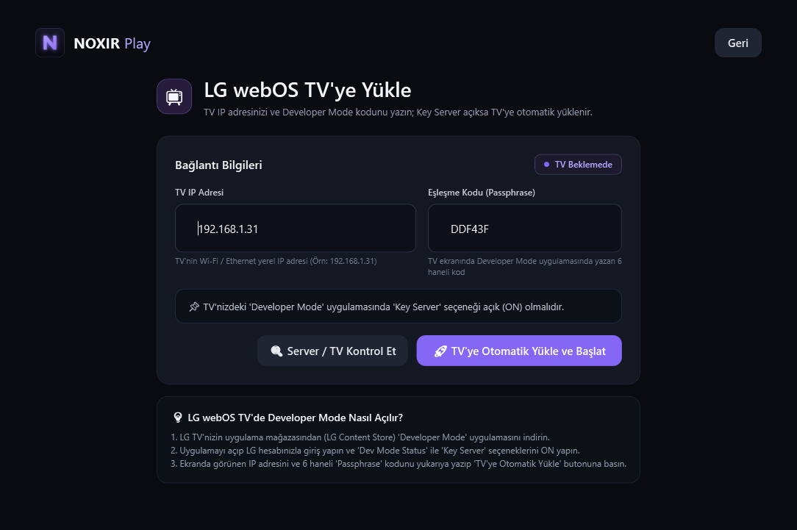

Oyun ekranındaki İngilizce altyazıları milisaniyeler içinde yapay zeka ile okur, 15 ms ultra düşük gecikmeyle Türkçe'ye çevirir. Hem bilgisayarınızda hem de LG webOS OLED/LED TV'nizde HDMI ekranının üzerine anında yerleştirir.
PlayStation 5 oyun ekranından alınan gerçek karelerle yapay zekanın altyazıları nasıl tarayıp milisaniyeler içinde Türkçe'ye dönüştürdüğünü inceleyin.



Yazılımın bilgisayarınızda çalışırken sahip olduğu resmi arayüz ekran görüntüleri. Sekmelere tıklayarak tüm menüleri inceleyin.

"PS5 görüntüsünü başlat" butonu ve "PS5 bağlantısı: PS5-764 eşleştirildi" canlı durum rozetiyle konsolunuzla tam senkron çalışır.
Üst menüdeki "Kullanım Kılavuzu", "LG TV'ye Yükle" ve "Çeviri ayarları" butonlarıyla tüm modüllere tek tıkla doğrudan geçiş yapılır.

NVIDIA GeForce RTX serisi CUDA 12 hızlandırmasıyla sıfır gecikme; GPU Hızını Test Et ve Yeniden Tara seçenekleri entegredir.
RapidOCR PP-OCRv6 Ultra Hızlı tarama, Meta NLLB-600M çevrimdışı 700 dil motoru ve orijinal altyazıyı gizleyen Opak Siyah Bant maskeleme.

Port 9922 üzerinden SSH anahtarı otomatik çekilir ve com.noxir.play.tv_1.0.0_all.ipk paketi televizyonunuza tek tıkla yüklenir.
PS5 konsolunuzu TV'nin HDMI girişinden 4K/HDR kalitesinde tam performans oynarken altyazılar şeffaf katman olarak ekranın altından akar.
Uygulama içerisinden PSN hesabınıza giriş yapın. PS5 Ayarlar -> Uzaktan Oynatma menüsündeki eşleşme kodunu girerek görüntüyü bağlayın.
Oyun ekranındaki sarı çerçeveyi farenizle altyazıların geçtiği konuma sürükleyin veya boyutlandırın.
"Canlı Çeviriyi Başlat" butonuna basın. Altyazılar 15 ms'de Türkçe olarak okunup TV veya PC ekranınıza yansıtılacaktır.
Gerçek zamanlı oyun çevirisinde gecikmeyi sıfırlamak ve yazıları kusursuz okumak için özel olarak geliştirildi.
Geleneksel NLLB ve büyük dil modellerine göre 10 kat daha hızlıdır. Özel INT8 kuantizasyonu sayesinde ortalama 15 milisaniyede çevirir, ses ve görüntü senkronunu asla bozmaz.
Oyun altyazıları, görev bildirimleri ve menü yazılarını pikselli olsa dahi algılayabilen gelişmiş CLAHE kontrast ve keskinleştirme motoru ile sıfır harf hatası.
Televizyonunuza yüklenen bağımsız IPK uygulaması sayesinde altyazıları doğrudan TV ekranınızın üzerine giydirir; PS5'i HDMI çıkışından tam kalitede oynamaya devam edersiniz.
GeForce RTX ve GTX serisi ekran kartlarında CUDA tensör hızlandırması kullanır. Harici ekran kartı bulunmayan bilgisayarlarda otomatik CPU moduna geçer.
Harici Python, Node.js veya komut dosyalarıyla uğraşmanıza gerek yoktur. Tek bir kurulum dosyasını çalıştırıp kurmanız yeterlidir; her şey tek tıkla hazır hale gelir.
Mafia, GTA ve popüler RPG serilerine ait kalıplaşmış oyun replikleri ve oyun terimleri doğrudan yerleşik sözlükten anında 0 ms'de eşleşir.
Karmaşık ayarlar ve kodlar geride kaldı.
Shopier üzerinden güvenle lisansınızı edinin ve tek parça NOXIR_Play_Setup_v1.0.exe dosyasını indirin.
Setup dosyasına çift tıklayın ve "İleri -> Kur" deyin. Tüm yapay zeka modelleri ve araçlar otomatik kurulacaktır.
Uygulamayı açın, PS5 ve TV eşleşmenizi yapın. Türkçe altyazı desteği olmayan oyunların keyfini çıkarın!
Ömür Boyu Kullanım & Tüm Yapay Zeka Modelleri Dahil
NOXIR Play v1.0 (1.89 GB) tek parça bağımsız kurulum paketi lisanslı bir üründür. Dosyayı sadece Shopier üzerinden lisans satın alan müşteriler indirebilir.
Shopier ödemeniz sonrası tarafınıza iletilen Sipariş Kodunu veya Doğrulama Anahtarını girerek 1.89 GB resmi GitHub sunucu indirmesini anında başlatabilirsiniz.
NOXIR Play, PlayStation 5 Remote Play görüntülerini düşük gecikmeyle yakalayıp yapay zeka ile anlık Türkçe altyazıya dönüştüren ve LG webOS televizyonlarla eşzamanlı çalışan masaüstü asistanıdır.
Aklınıza takılan soruların yanıtları burada.
Ömür Boyu Lisans · Tüm Yapay Zeka Modelleri & LG TV IPK Dahil